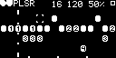

Clock Out
Primary clock output.
Clock In
Primary clock input. Internal clock is used when disconnected.
Reset In
Reset trigger input. Immediately resets the pattern (and internal clock, if using).
Probability 1 In
Controls the probability of steps marked 1 triggering (0V to 5V range).
Probability 2 In
Controls the probability of steps marked 2 triggering (0V to 5V range).
Probability 3 In
Controls the probability of steps marked 3 triggering (0V to 5V range).
Probability 4 In
Controls the probability of steps marked 4 triggering (0V to 5V range).
Pattern 1 Out
Trigger output for sequencer pattern 1.
Pattern 2 Out
Trigger output for sequencer pattern 2.
Pattern 3 Out
Trigger output for sequencer pattern 3.
Pattern 4 Out
Trigger output for sequencer pattern 4.